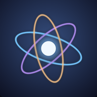

مدار
بيئة الواقع المختلط على آيفونك
الجاهزية
- الكاميرا الخلفيةيُطلب عند الدخول
- حساسات الحركةيُطلب عند الدخول
- تتبع اليدبانتظار
- وضع العرض…
يعمل أفقياً دائماً، سواء كان قفل الاتجاه مفعّلاً أم لا. للخروج: المس الشاشة بإصبعين لثانيتين، أو من القائمة ← الإعدادات ← الخروج.
ثبّته كتطبيق لملء الشاشة
- اضغط زر المشاركة في Safari أسفل الشاشة
- اختر «إضافة إلى الشاشة الرئيسية» ثم افتح مدار من أيقونته
- أضف ملفاتك من داخل التطبيق المثبّت لأن مكتبته منفصلة عن Safari
على أندرويد (هاتف أو تابلت مثل Galaxy Tab): ثبّت تطبيق مدار Madar.apk — نفس مدار مع مشاركة شاشة الجهاز الحقيقية.
مع النظارة
- اضغط «ادخل إلى مدار» واسمح بالكاميرا والحركة
- ضع الهاتف أفقياً في النظارة تأكد أن غطاء النظارة لا يحجب الكاميرا الخلفية
- انظر حولك النوافذ معلّقة في غرفتك. ارفع يديك أمام الكاميرا للتحكم
- القرص للنقر، والقرص المطوّل في الفراغ للقائمة زر النظارة أو لمس الشاشة يعمل كنقرة أيضاً
شاشة اللابتوب داخل مدار
على اللابتوب: شارك الشاشة ثم افتح الرابط أو امسح الرمز بالهاتف. أبقِ هذه الصفحة مفتوحة على اللابتوب أثناء المشاركة.
مكتبتي
فيديو (MP4, MOV) · صور · مجسمات GLB, GLTF, OBJ, STL, FBX, USDZ. لملف GLTF أو OBJ اختر معه ملفاته (bin, mtl, الصور) في المرة نفسها.
لا توجد ملفات بعد. التجربة الأولى تتضمن فيديو ومجسماً تجريبيين.
مواقعي
روابط يوتيوب تُعرض كمشغّل كامل. بعض المواقع تمنع عرضها داخل تطبيقات أخرى، فتظهر فارغة.
لا توجد روابط.
النظارة والعرض
ضبط دقيق للعدسات
سجل التشخيص
إذا واجهت مشكلة، صوّر هذا السجل وأرسله.